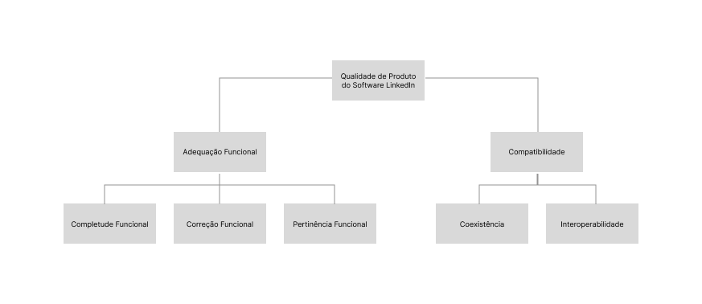

Fase 1 - Projeto Final
1. Propósito e Uso Pretendido da Avaliação do App
1.1 Por Que Avaliar o LinkedIn?
- Validação da Qualidade Acadêmica: Para a matéria de Qualidade de Software 1, esta avaliação serve como um exercício prático para aplicar os conceitos e métricas de qualidade aprendidos, demonstrando a capacidade de analisar e julgar sistemas reais.
- Identificação de Oportunidades de Melhoria: Embora o LinkedIn seja um aplicativo estabelecido, toda aplicação possui pontos de atrito. A avaliação visa identificar deficiências e pontos fortes específicos nas áreas de qualidade selecionadas, permitindo sugestões de melhorias.
- Garantia da Experiência do Usuário (UX): No mercado competitivo de redes profissionais, a qualidade do software impacta diretamente a retenção e a satisfação do usuário. Avaliar a qualidade é uma forma de garantir que o aplicativo continue a ser uma ferramenta eficaz e sem frustrações para o desenvolvimento de carreira.
1.2 Tópicos de Qualidade Focais
1.2.1 Adequação Funcional
- O que será avaliado: A eficácia das principais funcionalidades do LinkedIn para que os profissionais atinjam seus objetivos de carreira.
- Foco Principal: Serão examinadas as ferramentas centrais, como:
- A eficiência e relevância dos algoritmos de busca de emprego.
- A usabilidade e o sucesso das ferramentas de networking (conexão, mensagens).
- A facilidade e o alcance da publicação e consumo de conteúdo profissional.
- Pergunta-chave: O LinkedIn entrega de forma completa e correta as funções necessárias para o sucesso profissional de seus usuários?
1.2.2 Compatibilidade (Coexistência)
- O que será avaliado: A capacidade do aplicativo de operar de maneira eficiente e estável no ambiente comum de um smartphone, onde compartilha recursos com inúmeras outras aplicações.
- Foco Principal: Análise de como o aplicativo se comporta em termos de:
- Consumo de recursos (memória, bateria, dados).
- Estabilidade e ausência de falhas que impactem outros aplicativos.
- Integração com ecossistemas externos (por exemplo, login com outras plataformas ou o compartilhamento de dados com ferramentas de recrutamento).
- Pergunta-chave: O LinkedIn funciona harmoniosamente no ambiente operacional do usuário, sem causar impacto negativo em sua produtividade geral?
1.3 Para Quem e Como os Resultados Serão Usados
1.3.1 Para Quem
- O Corpo Docente da UnB (Professores e Avaliadores): Os resultados e a metodologia servirão como comprovação do aprendizado prático e da aplicação da teoria de Qualidade de Software.
- A Equipe de Desenvolvimento (Simulada): Os insights e as sugestões de melhoria podem ser direcionados a uma equipe fictícia do LinkedIn, como um exercício de comunicação de problemas e priorização de backlogs.
- Os Usuários Finais (Estudantes e Profissionais): Os resultados podem conscientizar os usuários sobre os pontos fortes e fracos do aplicativo, auxiliando-os a usá-lo de forma mais eficiente.
1.3.2 Uso Pretendido dos Resultados
- Relatório de Não-Conformidades (Acadêmico): Gerar um documento formal detalhando as falhas encontradas, as não-conformidades com os requisitos de qualidade (Adequação Funcional e Coexistência) e o impacto percebido no usuário.
- Sugestões de Refatoração e Melhoria: Propor mudanças concretas no design e na arquitetura do aplicativo que poderiam otimizar as funcionalidades avaliadas e reduzir os conflitos de coexistência.
- Base para Testes Futuros: Os resultados servirão como ponto de partida para a criação de cenários de testes mais robustos em projetos subsequentes, como testes de usabilidade aprofundados ou testes de performance em dispositivos variados.
2. Requisitante e Partes Interessadas
2.1 Requisitantes
2.2 Partes Interessadas
- Candidatos a vagas (usuários finais): Buscam uma plataforma eficiente, confiável e segura para gerenciar suas carreiras e encontrar oportunidades.
- Recrutadores e Empresas (clientes): Utilizam a plataforma para encontrar e contratar talentos, esperando que os perfis sejam detalhados e que as ferramentas de busca sejam precisas.
- Desenvolvedores e Equipe de TI do LinkedIn: Responsáveis por implementar, manter e garantir o funcionamento técnico da plataforma[cite: 19].
- Operadores de Infraestrutura: Garantem a disponibilidade e o desempenho da plataforma.
- Acionistas do LinkedIn/Microsoft: Interessados no crescimento, reputação e lucratividade da plataforma.
3. Tipo de Produto e Descrição Estruturada do Software
3.1 Tipo de Produto
3.2 Descrição Estruturada (Escopo Definido)
3.2.1 Módulo 1: Gestão de Perfil Profissional
- Interfaces: Interface de usuário para criação e edição de seções do perfil (experiência, formação acadêmica, competências, recomendações).
- Dependências: Interage com o banco de dados de usuários, sistema de autenticação e, opcionalmente, com sistemas externos para importação de certificados.
3.2.2 Módulo 2: Busca e Candidatura a Vagas
- Interfaces: Página de busca de vagas com filtros (cargo, localidade, tipo de contrato, etc.), interface de visualização de vagas e formulário de candidatura (simplificada ou completa).
- Dependências: Conecta-se ao banco de dados de vagas, ao módulo de perfil do usuário (para preenchimento automático), a sistemas de rastreamento de candidatos (ATS) de empresas externas e a um motor de busca e recomendação.
4. Modelo de Qualidade e Representação Gráfica
Para a avaliação de qualidade do software LinkedIn, foi adotado como referência o modelo de qualidade de produto definido pela norma ISO/IEC 25010, que faz parte do framework SQuaRE. A escolha deste modelo padrão se justifica por oferecer uma taxonomia consolidada e abrangente para a especificação dos requisitos de avaliação de um produto de software.
-
Adaptação do Modelo: O modelo padrão foi adaptado para focar nos aspectos mais críticos do LinkedIn, considerando seu propósito e o escopo definido para esta avaliação. O propósito de avaliar a jornada do candidato a uma vaga orienta a seleção das características. Foram selecionadas duas características de qualidade de produto, com a exclusão explícita da característica Usabilidade, conforme a premissa do trabalho. As características escolhidas são:
-
1. Adequação Funcional: Refere-se à capacidade do software de prover funcionalidades que atendam às necessidades declaradas e implícitas do usuário.
- Completude Funcional: Avalia se o conjunto de funções oferecidas é suficiente para a conclusão de tarefas essenciais (ex: preenchimento do perfil, candidatura a vagas).
- Correção Funcional: Verifica se as funções produzem os resultados corretos (ex: filtros de busca retornam resultados precisos).
- Pertinência Funcional: Examina se as funcionalidades disponíveis são apropriadas para os objetivos do usuário (ex: recomendações de vagas são pertinentes).
-
2. Compatibilidade: Refere-se à capacidade do produto de coexistir e trocar informações com outros sistemas, compartilhando o mesmo ambiente e recursos.
- Coexistência: Avalia a capacidade do software de operar em seu ambiente sem impactar negativamente outros softwares (ex: uso de recursos de CPU e memória do navegador).
- Interoperabilidade: Mede a capacidade de trocar informações com outros sistemas (ex: exportação de perfil para PDF ou integração com sistemas de recrutamento).
-
4.1 Representação Gráfica
A representação gráfica do modelo adaptado é fundamental para comunicar de forma clara a estrutura da avaliação. Ela é organizada em um diagrama hierárquico com a seguinte estrutura:
- Nível 0 (Raiz): O nó central, intitulado "Qualidade de Produto do Software LinkedIn", que representa o objeto geral da avaliação.
- Nível 1 (Características): Duas ramificações principais que derivam da raiz, representando as características de alto nível selecionadas: "Adequação Funcional" e "Compatibilidade".
- Nível 2 (Subcaracterísticas): Cada característica se decompõe em nós secundários.
- Adequação Funcional desdobra-se em:
Completude Funcional,Correção FuncionalePertinência Funcional. - Compatibilidade desdobra-se em:
CoexistênciaeInteroperabilidade.
- Adequação Funcional desdobra-se em:

Este diagrama representa visualmente o modelo de qualidade específico para a avaliação do LinkedIn, delimitando o escopo e a relação entre os atributos que serão analisados.
5. Seleção e Priorização de Características
- Adequação Funcional (Prioridade Alta): Justificativa: A principal proposta de valor do LinkedIn reside na eficácia de suas ferramentas. Se a busca de vagas não retorna resultados relevantes (correção funcional), se o perfil não permite adicionar todas as informações necessárias (completude funcional) ou se a candidatura a uma vaga falha, a plataforma perde completamente seu propósito para o usuário. A adequação funcional é, portanto, a base para que os profissionais atinjam seus objetivos de carreira através do serviço.
- Compatibilidade (Coexistência) (Prioridade Alta): Justificativa: O LinkedIn não opera isoladamente; ele coexiste no ambiente digital do usuário (navegador com múltiplas abas, extensões) e se integra a um ecossistema profissional maior (sistemas de rastreamento de candidatos - ATS, plataformas de e-mail, etc.). É crucial que a plataforma funcione de forma eficiente sem consumir recursos excessivos que impactem negativamente outras aplicações. A capacidade de coexistir e interoperar sem conflitos garante uma experiência fluida e profissional.
6. Escopo, Profundidade e Objetos de Avaliação
6.1 Objetos de Avaliação
- O processo de edição e salvamento de informações na seção "Experiência" do perfil.
- A funcionalidade de busca de vagas, aplicando pelo menos três filtros (ex: cargo, localidade e tipo de vaga).
- O fluxo de candidatura simplificada ("Easy Apply").
6.2 Profundidade da Avaliação
- Adequação Funcional: A análise verificará se os filtros de busca de vagas operam corretamente (Correção Funcional) e se o formulário de candidatura contém os campos essenciais para o processo (Completude Funcional).
- Compatibilidade (Coexistência): Serão realizados testes de uso da plataforma em diferentes navegadores, sendo eles Chrome, Firefox com extensões ativas, para observar o consumo de recursos (CPU, memória) e verificar se há impacto negativo no desempenho de outras aplicações abertas simultaneamente.
6.3 Fora do Escopo
- Funcionalidades de Networking: Mensagens, feed de notícias, criação de conteúdo.
- LinkedIn Learning: Plataforma de cursos.
- Recruiter e Sales Navigator: Ferramentas pagas para recrutadores e vendedores.
- Aplicativos Móveis: A avaliação se concentrará na versão web para desktop.
- Justificativa: Essas funcionalidades são complexas e sua avaliação exigiria um projeto separado. O foco atual está na jornada principal do candidato a emprego, que é o pilar da plataforma.
7. ODS, Metas e Indicadores Relacionados
7.1 ODS 8: Trabalho Decente e Crescimento Econômico
- Justificativa do Vínculo: O LinkedIn é uma ferramenta global que visa promover o emprego pleno e produtivo. Ele conecta diretamente profissionais a oportunidades de trabalho, facilitando o acesso ao mercado e fomentando o crescimento econômico.
- Metas Associadas:
- Meta 8.5: "Até 2030, alcançar o emprego pleno e produtivo e trabalho decente para todas as mulheres e homens, inclusive para os jovens e as pessoas com deficiência, e remuneração igual para trabalho de igual valor."
- Meta 8.6: "Até 2020, reduzir substancialmente a proporção de jovens sem emprego, educação ou formação."
7.2 ODS 10: Redução das Desigualdades
- Justificativa do Vínculo: Ao democratizar o acesso a vagas de emprego em diferentes regiões e setores, o LinkedIn tem o potencial de reduzir desigualdades de oportunidades, permitindo que talentos de diversas origens sejam encontrados por empresas globais.
- Meta Associada:
- Meta 10.2: "Até 2030, empoderar e promover a inclusão social, econômica e política de todos, independentemente da idade, gênero, deficiência, raça, etnia, origem, religião, condição econômica ou outra."
8. Histórico de Versões
Tabela 1: Histórico de versões
| Versão | Descrição | Autor | Data | Revisor |
|---|---|---|---|---|
| 1.0 | Criação do documento | Bruno Cruz, Gabriel Mendes, João Moreira, Maria Eduarda Pereira, Mayara Marques, Pedro Túlio | 28/09/2025 | Todos |
| 1.1 | Adição de características escolhidas e representação gráfica | Bruno Cruz, Gabriel Mendes, João Moreira, Maria Eduarda Pereira, Mayara Marques, Pedro Túlio | 28/09/2025 | Todos |
| 1.2 | Corrige formatação | Mayara Marques | 30/09/2025 | Maria Eduarda Pereira |
| 1.3 | Corrige formatação | João Moreira | 30/09/2025 | Mayara Marques |
| 1.4 | Ajuste de erro de escrita | Bruno Cruz | 14/10/2025 |